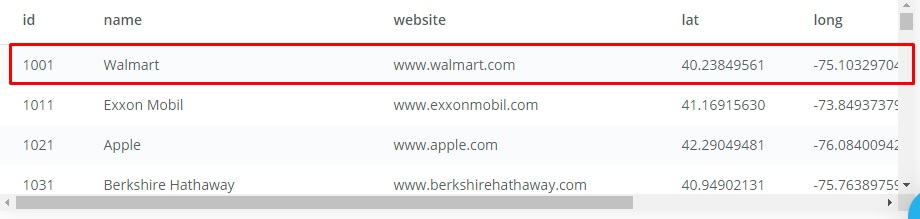
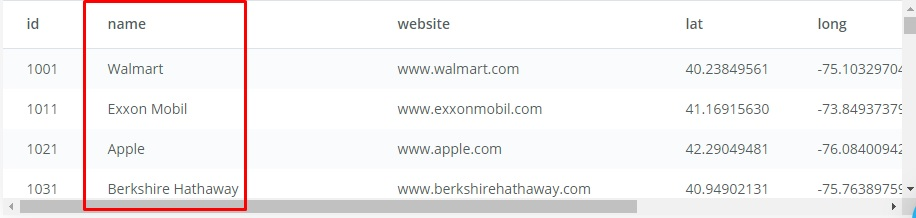
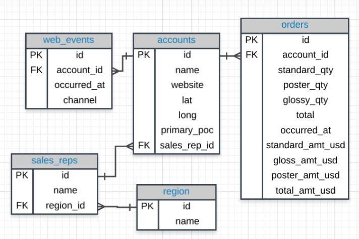
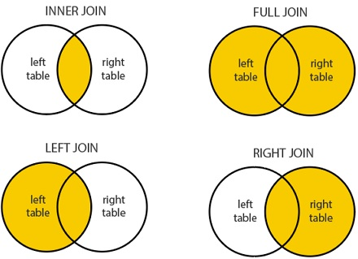

O que será apresentado?
SQL - Structured Query Language
SQL é utilizado para manipular e acessar dados em banco de dados relacionais
Table
São dados tabulados separados por linhas e colunas
Row - Linha
Records - Registros
Column - Coluna
Field/Attribute - Campo/Atributo
SELECT
SELECT retorna os registros de uma ou mais tabelas
Retorna todas as colunas da tabela table
SELECT *
FROM table;
Retorna as colunas column_a e column_b da tabela table
SELECT column_a, column_b
FROM table;
WHERE
Filtrar o que será retornado de uma consulta
SELECT *
FROM table
WHERE attribute = value;
AND & BETWEEN
SELECT *
FROM table
WHERE attribute = value AND attribute2 = value2;
SELECT *
FROM table
WHERE attribute BETWEEN value AND value2;
OR
SELECT *
FROM table
WHERE attribute = value OR attribute2 = value2;
IN
SELECT *
FROM table
WHERE attribute IN (value1,value2);
LIKE
LIKE é case sensitive, ou seja, 'a%' é diferente de 'A%'
SELECT *
FROM table
WHERE attribute LIKE '%A%';
NOT
SELECT *
FROM table
WHERE attribute NOT IN (value1,value2);
SELECT *
FROM table
WHERE attribute NOT LIKE '%A%';
ALIAS
SELECT t.column AS col_1
FROM table t
WHERE t.attribute = value;
DISTINCT
SELECT DISTINCT column
FROM table
WHERE attribute = value;
LIMIT
SELECT column
FROM table
WHERE attribute = value
LIMIT 10;
ORDER BY
ASC & DESC
SELECT column
FROM table
WHERE attribute = value
ORDER BY column ASC
LIMIT 10;
JOINs
Resumo: combinar registros baseado na relação entre as colunas (PK - FK) de duas ou mais tabelas. *ERD - Entity Relationship Diagram
Tipos de JOINs
INNER JOIN
SELECT *
FROM table t
INNER JOIN table2 t2
ON t.attribute = t2.attribute;
LEFT JOIN
SELECT *
FROM table t
LEFT JOIN table2 t2
ON t.attribute = t2.attribute;
Aggregation Function
Tem como finalidade agrupar dados de acordo com determinada função
COUNT
SELECT COUNT(*)
FROM table;
SELECT COUNT(column)
FROM table;
SUM
SELECT SUM(column)
FROM table;
AVG
SELECT AVG(column)
FROM table;
MAX & MIN
SELECT MAX(column), MIN(column)
FROM table;
GROUP BY & HAVING
SELECT column_a, COUNT(column_b)
FROM table
GROUP BY column_a;
SELECT column_a, COUNT(column_b)
FROM table
GROUP BY column_a
HAVING COUNT(column_b) = value;
Análise SELF JOIN
Encontrando o enésimo maior valor com self join e subquery
Tabela: Employee
| employee_id | salary |
|---|---|
| 1 | 200 |
| 2 | 800 |
| 3 | 450 |
SELECT *
FROM Employee Emp1
WHERE (n-1) = (SELECT COUNT(DISTINCT(Emp2.salary))
FROM Employee Emp2
WHERE salary.Salary > Emp1.salary)
Explicação comum
SELECT *
FROM Employee Emp1
WHERE (n-1) = (SELECT COUNT(DISTINCT(Emp2.salary))
FROM Employee Emp2
WHERE salary.Salary > Emp1.salary)
Substituir o 'n' (enésimo) do '(n-1)' e isso irá retornar o enésimo valor
Exemplo: se estiver interessado em retornar o segundo maior valor -> n=2 -> '(2-1)' = 1
Análise Explicativa
| employee_id | salary |
|---|---|
| 1 | 200 |
| 2 | 800 |
| 3 | 450 |
| employee_id | salary |
|---|---|
| 1 | 200 |
| 2 | 800 |
| 3 | 450 |
SELECT *
FROM Employee Emp1
WHERE (n-1) = (SELECT COUNT(DISTINCT(Emp2.salary))
FROM Employee Emp2
WHERE salary.Salary > Emp1.salary)
SQL for Data Analysis: https://www.udacity.com/course/sql-for-data-analysis--ud198
W3SCHOOLS: https://www.w3schools.com/sql/default.asp
reveal.js: https://revealjs.com/